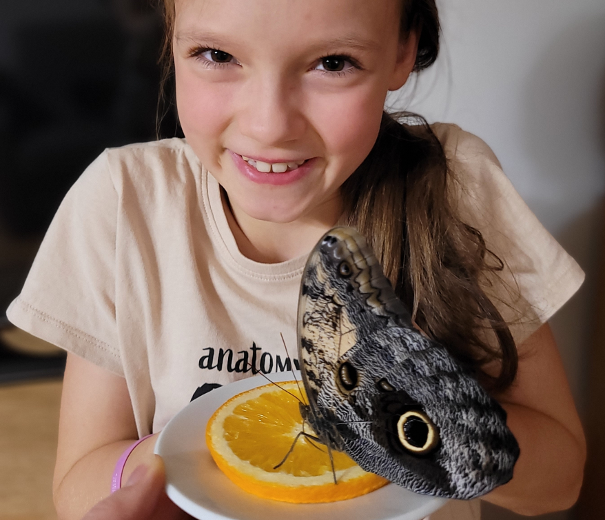

Mam na imię Alicja, jestem uczennicą klasy czwartej Niepublicznej Szkoły Podstawowej Dzieci Montessori na ul. A. Struga 8 w Lublinie. Chciałabym podzielić się obserwacją przyrodniczą, którą wraz z bratem Dawidem przeprowadziłam we własnym domu. Nasza przygoda zaczęła się pod koniec wakacji 2023 r. od wizyty w Motylarni nad Zalewem Zembrzyckim. Kończył się wtedy sezon jej działalności i można było otrzymać larwy motyla gatunku Caligo Memnon.
Hodowla motyla Caligo memnon :)
Zapraszam do zapoznania się z etapami cyklu rozwojowego motyla.
